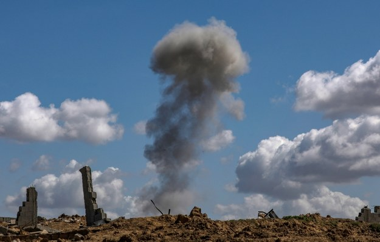

Tkaczyk News
SERWIS INFORMACYJNY
Izraelski atak rakietowy na Syrię. Celem pozycje Hezbollahu?

Izrael przeprowadził w niedzielę nad ranem atak rakietowy na cele w południowej części Syrii, wyrządzając szkody materialne - poinformowały syryjskie media. Tel Awiw nie potwierdził tych doniesień.
Według oficjalnej syryjskiej agencji SANA, powołującej się na źródła wojskowe, obrona powietrzna zestrzeliła część pocisków, które zostały wystrzelone z rejonu okupowanych przez Izrael Wzgórz Golan.
Ataki miały wyrządzić "straty materialne". W dodatku jeden syryjski żołnierz został ranny.
Natomiast mające siedzibę w Wielkiej Brytanii Syryjskie Obserwatorium Praw Człowieka podało, że celem izraelskich pocisków były bazy wojskowe w górach Qalamoun, które są położone na północny-wschód od Damaszku. Tam operuje libański Hezbollah.
Jak podsumowało Obserwatorium, był to już 24 izraelski atak na cele w Syrii od początku 2024 roku.
W uderzeniach miało zginąć 43 bojowników różnych ugrupowań, w tym Hezbollahu i irańskiego Korpusu Strażników Rewolucji Islamskiej oraz 9 cywilów.
Tak jak w poprzednich przypadkach, brak potwierdzenia lub zaprzeczenia tych ataków ze strony izraelskiej.
17.03.2023, 03:38